A revolução da Química aplicada à Medicina com o isolamento da primeira substância de origem vegetal – morfina, originada do ópio (Papaver somniferum L.) no século XIX – estabeleceu novos parâmetros para o desenvolvimento de
medicamentos sintéticos.
A morfina tem em sua composição o elemento nitrogênio. De acordo com a fórmula estrutural desse alcaloide, indique sua fórmula molecular.
O uso inadequado de qualquer fármaco pode ser perigoso e apresentar consequências graves, como a intoxicação. De que forma devemos proceder com a utilização de medicamentos?
Objetivos da unidade
compreender e reconhecer a importância das regras básicas de nomenclatura para as principais funções nitrogenadas;
identificar e compreender as principais propriedades físicas das funções orgânicas nitrogenadas mais importantes com base na fórmula estrutural ou no nome;
reconhecer as diferentes funções presentes nas cadeias carbônicas classificadas como funções mistas.
A morfina, um tipo de alcaloide, corresponde a uma amina heterocíclica. Esse composto cíclico apresenta em sua constituição o elemento nitrogênio como heteroátomo. Além das aminas, há outros
compostos formados por átomos de carbono, hidrogênio e nitrogênio, que correspondem a funções orgânicas nitrogenadas.
alcaloide: substância de caráter básico derivada principalmente de plantas.
Funções com nitrogênio
As funções orgânicas nitrogenadas compreendem os compostos formados por átomos de carbono, hidrogênio e nitrogênio. Em alguns casos, como na morfina, também apresentam átomos de oxigênio. Por meio dos diferentes arranjos entre os
átomos desses elementos, formam-se, entre outros, os seguintes derivados nitrogenados: aminas, amidas e nitrocompostos.
Função química
Grupo funcional
Exemplo
Funções nitrogenadas
amina
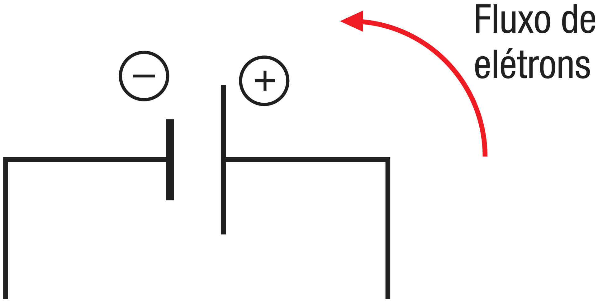
amida
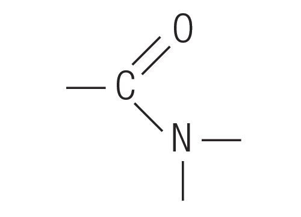
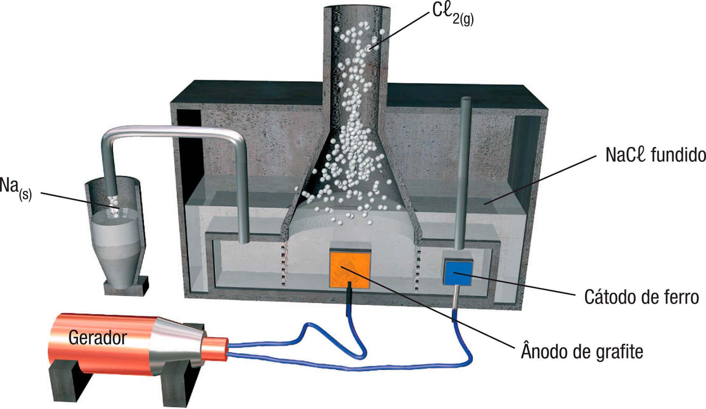
nitrocomposto
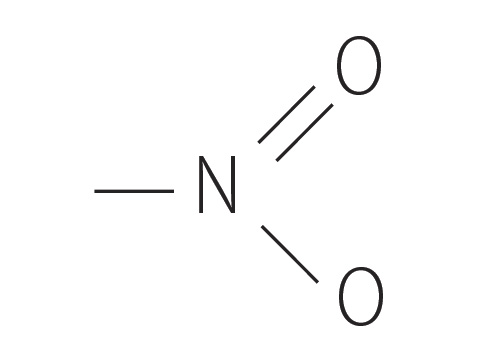
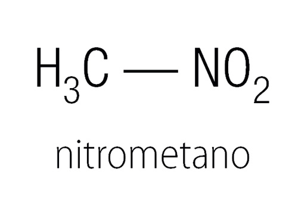
Aminas
As aminas podem ser consideradas produtos resultantes da substituição de um ou mais hidrogênios da amônia (NH3) por um grupo orgânico derivado de hidrocarboneto.
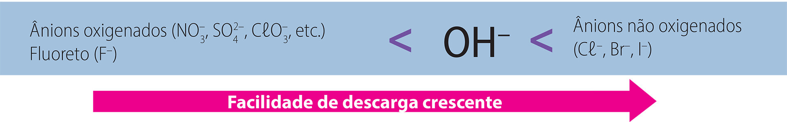
Com base no número de grupos orgânicos ligados ao átomo de nitrogênio, as aminas podem ser classificadas em: primárias, secundárias e terciárias.
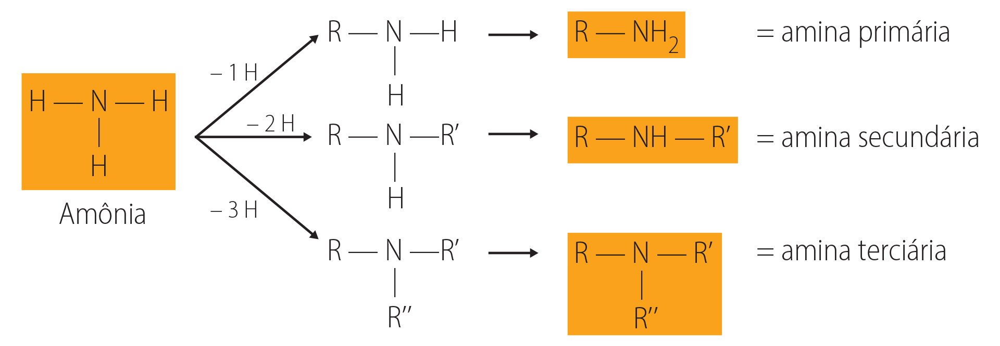
Em que R, R’ e R’’ são grupos orgânicos (iguais ou diferentes entre si).
Em geral, a nomenclatura oficial das aminas recebe a terminação –amina. No entanto, dependendo da classificação do composto, a nomenclatura da IUPAC apresenta normas diferentes, tais como as que
seguem.
Aminas primárias
Considera-se o hidrocarboneto correspondente substituindo a terminação –o pela terminação –amina. Quando necessário, indica-se a posição do grupo funcional (–NH2).
Aminas secundárias e terciárias
Consideram-se os grupos substituintes em ordem alfabética, sem espaço nem hífen, seguidos da terminação –amina. Para as aminas simétricas, quando necessário, usam-se os prefixos di– ou
tri– no grupo orgânico substituinte.
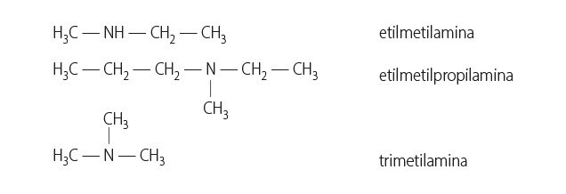
A ligação entre os átomos de nitrogênio e de hidrogênio presente nas aminas primárias e secundárias é bastante polarizada. Por isso, essas aminas têm interações intensas, conhecidas como ligações de hidrogênio.
As moléculas das aminas terciárias, ao contrário, não apresentam tais ligações e, por esse motivo, têm pontos de ebulição inferiores se comparados aos das outras aminas de mesma massa molar.
Pode-se dizer que o ponto de ebulição aumenta na seguinte ordem:
Por serem consideradas substâncias moderadamente polares, as aminas têm pontos de ebulição mais altos que os dos alcanos de massa molar equivalente. No entanto, são mais voláteis que os álcoois de massa molar comparável, pois as
ligações de hidrogênio entre suas moléculas são menos intensas.
Composto orgânico
Fórmula estrutural
Massa molar (g ⋅ mol–1)
Ponto de ebulição (°C)
propano
CH3CH2CH3
44
–42
dimetilamina
(CH3)2NH
45
7
etilamina
CH3CH2NH2
17
etanol
CH3CH2OH
47
78
Como para os demais compostos orgânicos apresentados, o ponto de ebulição aumenta com o aumento da cadeia carbônica. Porém, quanto mais simétrica for a molécula, menos intensa é a interação intermolecular e, portanto, menor é o ponto
de ebulição.
Amina
Fórmula estrutural
Ponto de ebulição (°C)
metilamina
CH3NH2
–6
dimetilamina
(CH3)2NH
7
trimetilamina
(CH3)3N
3
etilamina
CH3CH2NH2
17
propilamina
CH3CH2CH2NH2
48
Todas as aminas, inclusive as terciárias, ligam-se à água por meio de ligações de hidrogênio. Dessa forma, é possível dizer que as aminas de baixa massa molar, com até cinco átomos de carbono na molécula, são altamente solúveis em
água. Contudo, a solubilidade diminui conforme ocorre o aumento de grupos substituintes, pois prevalecem as propriedades dos compostos apolares.
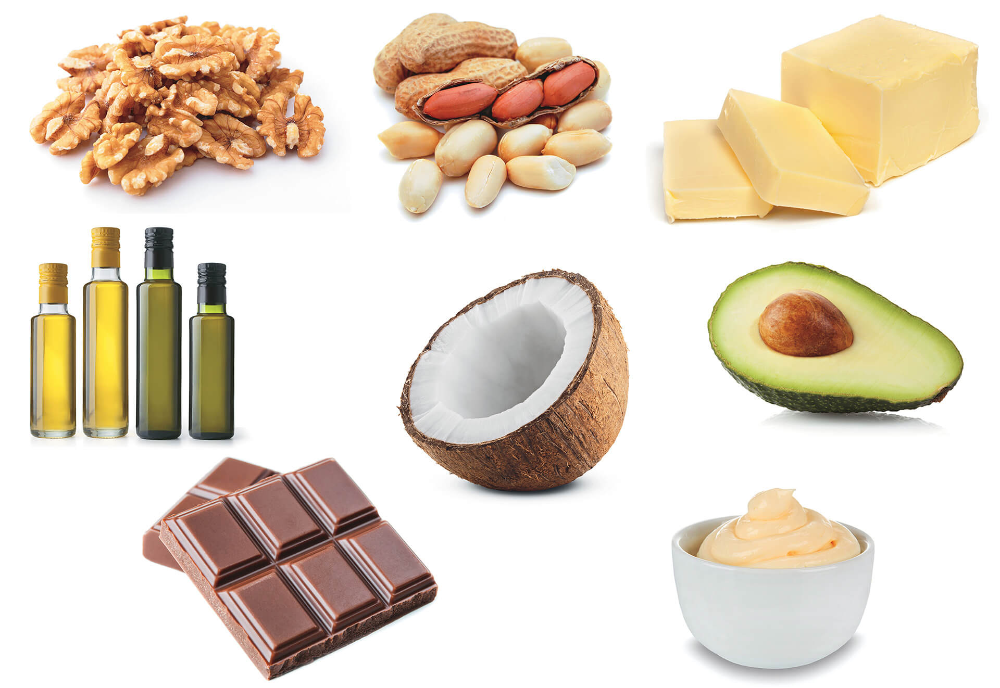
Comumente, essa função orgânica é encontrada em várias substâncias no organismo vivo, entre elas, nos aminoácidos, que são formadores das proteínas. Esses compostos também são amplamente utilizados no preparo de vários produtos
sintéticos e aceleradores no processo de vulcanização da borracha. As aminas aromáticas, como a anilina, são usadas na produção de corantes orgânicos.
A anilina é o nome trivial da fenilamina.
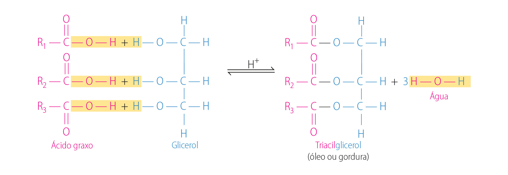
Amidas
As amidas são compostos que apresentam o átomo de nitrogênio ligado a um grupo carbonila.
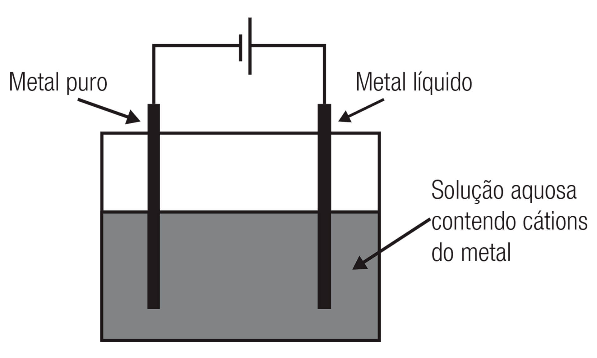
Pode-se dizer também que são compostos derivados dos ácidos carboxílicos, pela substituição da hidroxila (–OH) por um grupo –NH2, por exemplo. Quando um átomo de hidrogênio do grupo –NH2 é substituído por grupo(s)
derivado(s) de hidrocarboneto, têm-se as amidas monossubstituídas ou dissubstituídas.
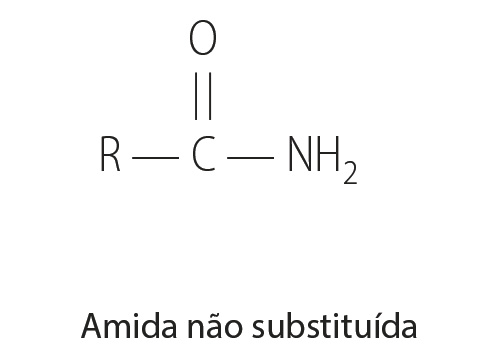
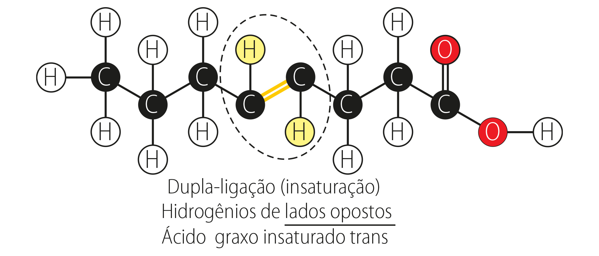
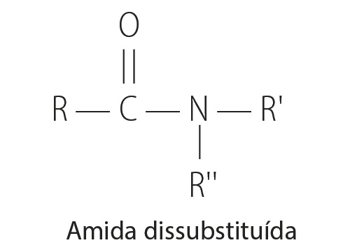
A nomenclatura, oficial e semissistemática, das amidas não substituídas é feita simplificadamente de maneira substitutiva à nomenclatura dos ácidos carboxílicos correspondentes. A terminação
–oico (nomenclatura oficial) e a terminação –ico (nomenclatura usual) são substituídas pela terminação –amida.
Ácido carboxílico
Amida
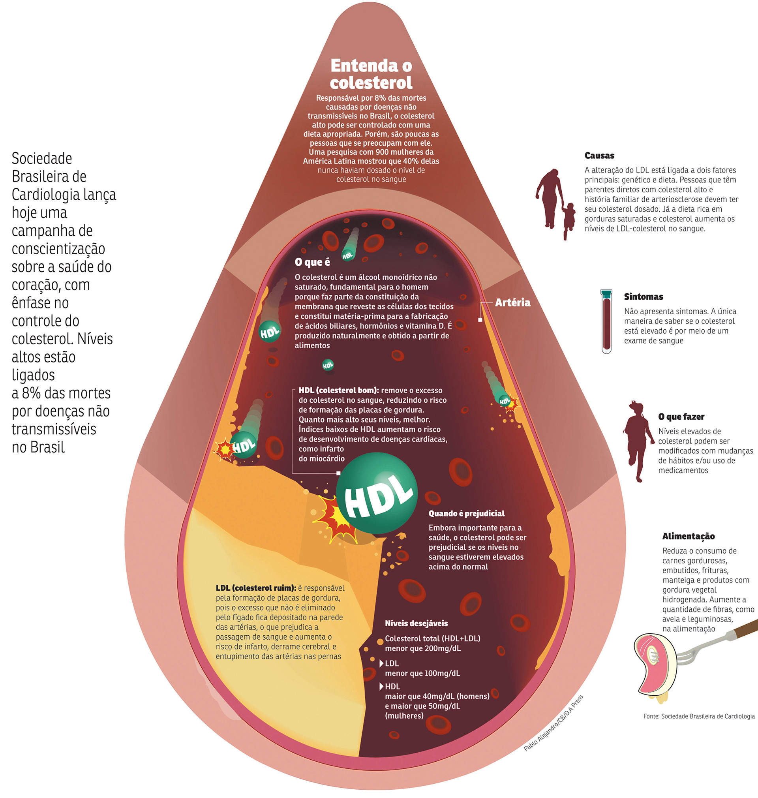
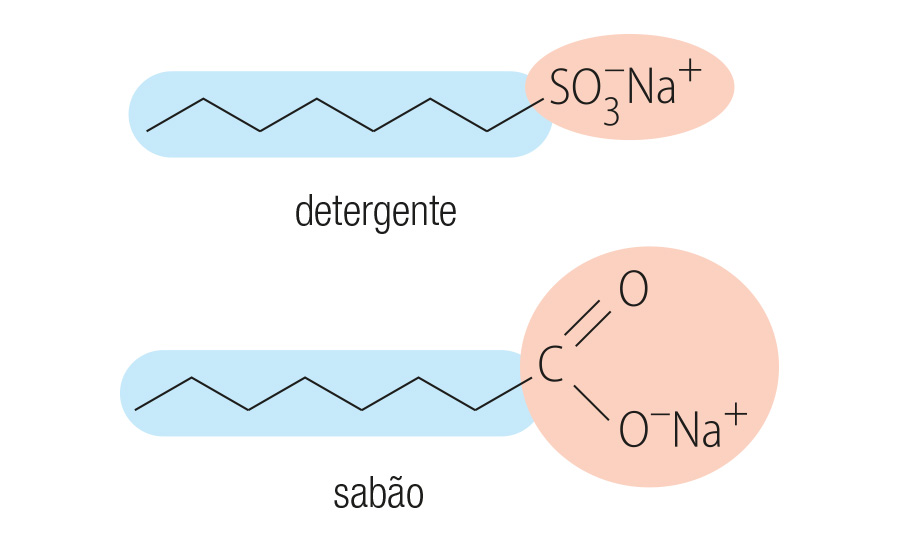
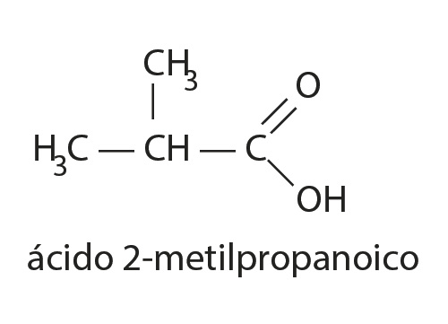
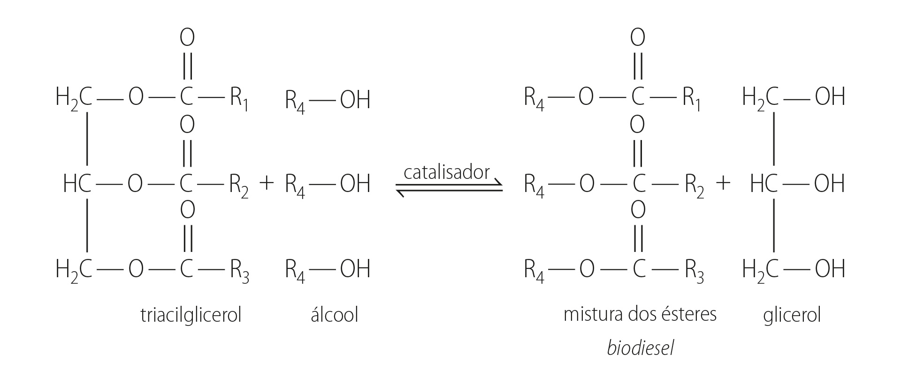
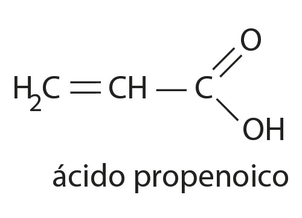
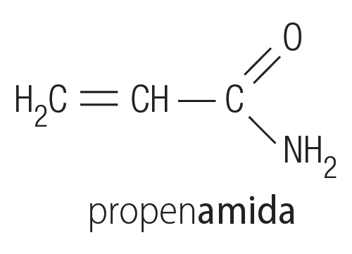
Em amidas monossubstituídas e dissubstituídas, coloca-se a letra N antes do(s) grupo(s) substituinte(s) ligado(s) ao átomo de nitrogênio.
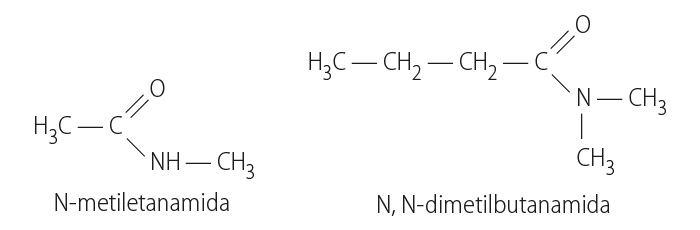
Dependendo do número de grupos funcionais
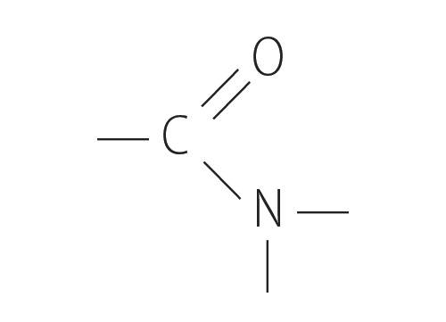
ligados ao nitrogênio, as amidas podem ser:
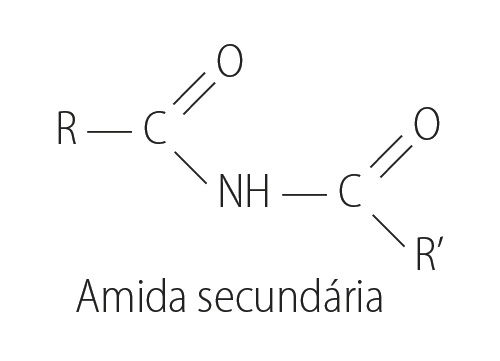
A cafeina é um composto natural, pertencente também a classe dos alcaloides, e que apresenta em sua estrutura química, as funções de amina e amida. Considerada o estimulante legal mais usado no mundo, é comumente associada ao café.
No entanto, o consumo de cafeína em excesso pode colocar a saúde em risco.
As amidas primárias, assim como os ácidos carboxílicos, podem se ligar entre si por ligações de hidrogênio. Por esse motivo, são compostos bastante polares. Essa característica contribui para o fato de essas amidas apresentarem
elevados pontos de ebulição – inclusive podem ser até mais elevados que os dos ácidos carboxílicos de massas molares semelhantes. As amidas mais simples são solúveis em água.
A amida mais importante é a ureia, de fórmula CO(NH2)2. Sintetizada pela primeira vez, em 1828, pelo químico alemão Friedrich Wöhler, foi o primeiro composto orgânico obtido em laboratório.
Wöhler sintetizou de forma acidental um composto orgânico, derrubando a teoria do vitalismo.
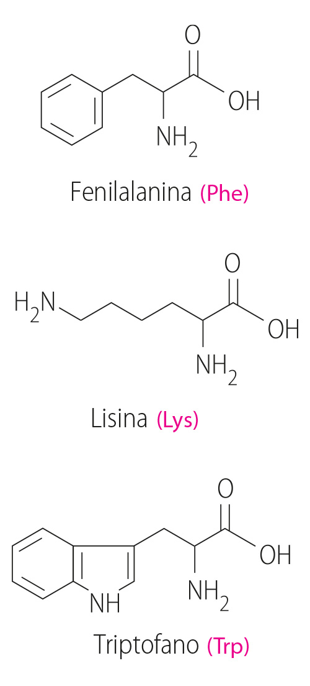
Nitrocompostos
Os nitrocompostos são caracterizados pela presença do grupo nitro (–NO2) ligado a uma cadeia carbônica.
O TNT é um dos explosivos mais utilizados no mundo.
A nomenclatura oficial é feita de maneira aditiva, acrescentando a palavra nitro antes do nome do hidrocarboneto correspondente. Veja alguns exemplos.
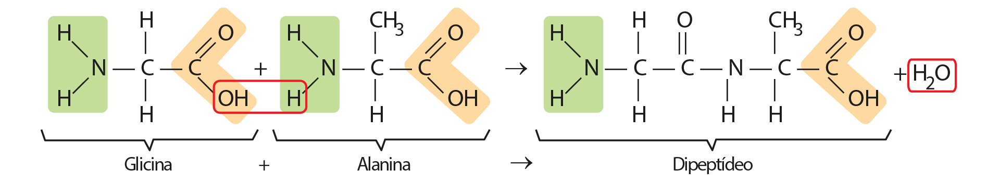
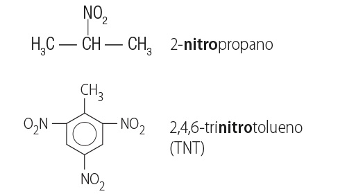
Pelo fato de o grupo nitro (–NO2) ser altamente polar, os nitrocompostos são bastante reativos. Entre suas aplicações práticas, destaca-se o uso para a fabricação de explosivos.
Entre os explosivos mais antigos e utilizados que se conhece, a nitroglicerina é o mais popular.
A nitroglicerina é uma substância líquida, incolor e oleosa, mas também altamente instável e explosiva. Basta um simples toque para que ocorra uma detonação espontânea. Como a molécula contém átomos de oxigênio, hidrogênio e
carbono, quando ela explode libera novas moléculas (como O2, N2, H2 e CO2), mais estáveis, e com uma grande energia cinética (há uma conversão entre a energia de ligação para energia
cinética!). Esta substância também foi utilizada como vasodilatador, nos ataques cardíacos e anginas.
O nome nitroglicerina vem de sua estrutura: ela é derivada da molécula glicerina (uma molécula biológica comum, serve de base para os triglicerídeos) onde os grupos –OH são substituídos por –NO2. O poder dos explosivos
deve-se ao fato de que o volume ocupado por um gás é muito maior do que o ocupado por um sólido ou por um líquido. Veja a água, por exemplo. Enquanto que 1 mol de água no estado líquido, a temperatura ambiente, ocupa um volume de
apenas 0,018 litros, esta mesma quantidade de água, no estado gasoso, ocuparia um espaço de mais de 20 litros! E, quanto maior for a temperatura, maior será o volume do gás.
É justamente a velocidade de sua reação de decomposição que faz com a nitroglicerina seja tão explosiva: a rápida expansão dos gases quentes produzidos provoca uma onda de choque supersônica. Pela estequeometria da reação acima, 4
moles de nitroglicerina (cerca de 900 gramas) são capazes de gerar 35 moles de gases quentes (quase 800 litros de gases, nas CNTP). Uma vantagem da nitroglicerina em relação aos outros explosivos, como o TNT (trinitrotolueno), é
que, ao contrário deste, nenhuma forma sólida de carbono é formada, produzindo uma explosão sem fumaça – propriedade muito útil para a artilharia. Assim, após o disparo, o soldado não ficaria com a visão obscurecida por uma cortina
de fumaça.
A nitroglicerina tem, entretanto, uma grande desvantagem: é muito, mas muito mesmo, instável. É praticamente impossível manusear ou transportar a substância.
UNIVERSITÁRIO. Alfred Nobel e a Nitroglicerina. Disponível em: <http://www.universitario.com.br/noticias/n.php?i=10031>. Acesso em: 9 ago. 2015.
De maneira geral, os nitrocompostos são usados como solventes e como intermediários na produção de outros compostos orgânicos. As interações intermoleculares do tipo dipolo-dipolo fazem com que ocorra certa estabilidade nesses
compostos e, por isso, o ponto de ebulição é relativamente elevado. Em relação à solubilidade, os nitrocompostos mais simples, com até dois átomos de carbono, são solúveis em água, os demais são insolúveis.
Organize as ideias
Com as informações sobre as funções nitrogenadas, complete o quadro.
Funções nitrogenadas
Função
Grupo funcional
Exemplo
Interação intermolecular
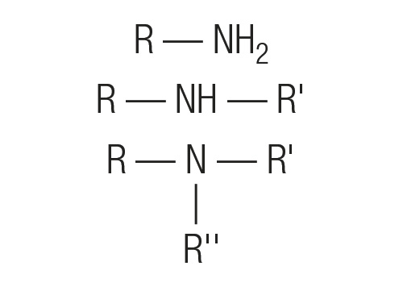
ligações de hidrogênio*
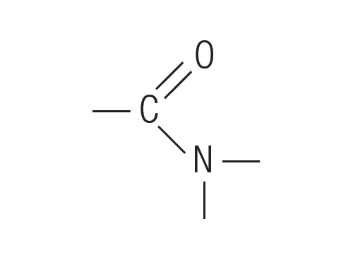
ligações de hidrogênio*
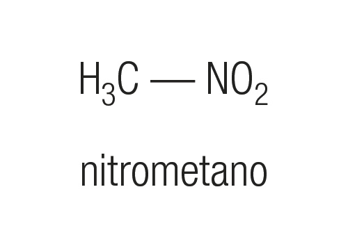
*Aminas terciárias e amidas dissubstituídas e/ou terciárias se estabilizam por interações do tipo dipolo-dipolo.
Atividades
Considerando o nome oficial das seguintes aminas, represente sua fórmula estrutural:
a) etilmetilamina
b) dietilamina
c) etilfenilpropilamina
d) dibenzilamina
(UESPI) Em relação a algumas características das aminas, quais das afirmativas abaixo estão corretas?
As aminas são mais solúveis em água que os álcoois correspondentes.
A dimetilamina deve apresentar um ponto de ebulição maior do que o da trimetilamina, devido à existência de interações de hidrogênio entre as suas moléculas.
A anilina é uma amina aromática.
Estão corretas:
a) 1 e 2 apenas;
b) 2 e 3 apenas;
c) 1 apenas;
d) 2 e 3 apenas;
e) 1, 2 e 3.
O cigarro apresenta em sua composição mais de 4 700 substâncias nocivas. Dessas, uma das mais perigosas é a nicotina, principal responsável pela dependência química.
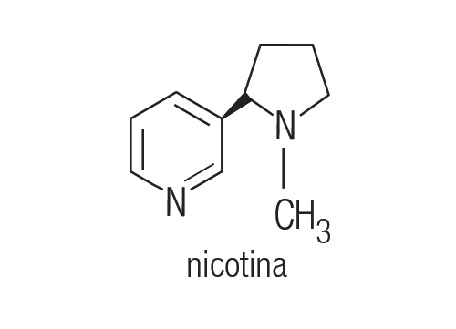
a) A qual classe orgânica pertence a nicotina?
b) Pesquise quais doenças são causadas pelo hábito de fumar.
Breaking Bad, criada e produzida por Vince Gilligan, foi considerada por muitos uma das melhores séries televisivas de todos os tempos.
Latinstock/SONY PICTURES TELEVISION
Na trama, o professor de química, Walter White, que passava por uma situação financeira delicada, vê sua vida ficar ainda mais complicada ao descobrir que está com câncer de pulmão em estado terminal. Para assegurar o futuro
financeiro de sua família, ele resolve aplicar suas habilidades em química a favor do crime, produzindo a melhor metanfetamina do mundo.
metanfetamina: droga estimulante do sistema nervoso central (SNC), muito potente e altamente viciante.
Pela fórmula estrutural desse composto, determine sua fórmula molecular e indique a qual função orgânica pertence.
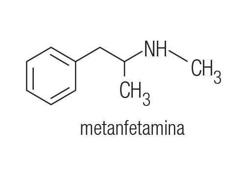
Escreva o nome oficial, conforme as regras da IUPAC, para as seguintes amidas.
a)
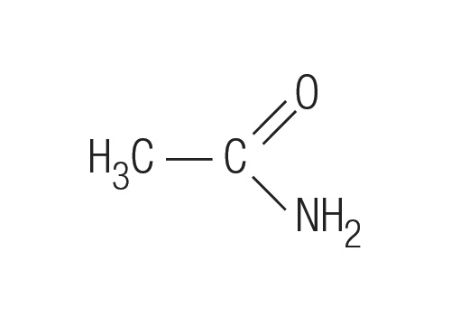
b)
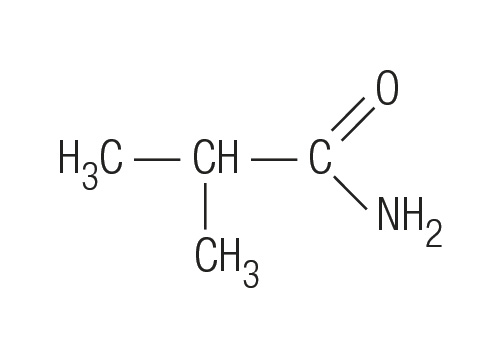
c)
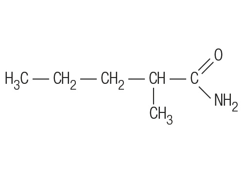
d)
As amidas primárias, assim como os ácidos carboxílicos, apresentam ligações de hidrogênio entre suas moléculas. Porém, suas propriedades físicas, como o ponto de ebulição, são mais intensas que as dos ácidos carboxílicos de massas
molares semelhantes. Qual é a explicação para essa diferença entre esses compostos?
Escreva as fórmulas estruturais dos seguintes nitrocompostos:
a) nitrobenzeno
b) 2-nitropentano
c) 3-nitro-hexano
d) 2,4-dinitro-heptano
e) metadinitrobenzeno
Nos compostos orgânicos com estruturas mais complexas, é comum a presença de mais de uma função orgânica – função mista. Identifique os grupos funcionais presentes nos compostos a seguir.
a)
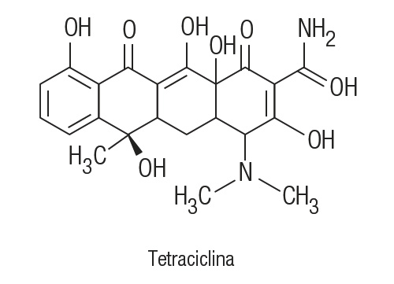
b)
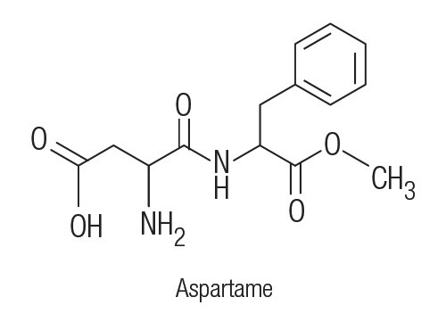
c)
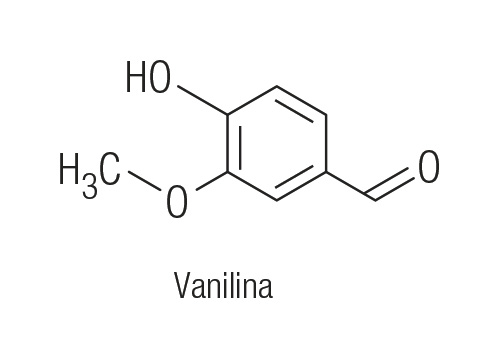
d)
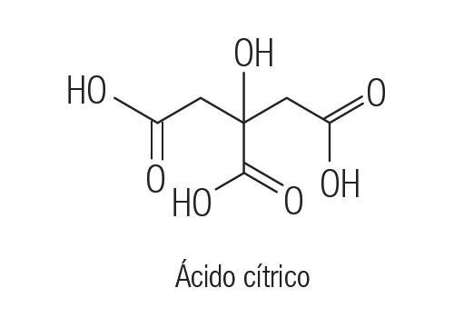
e)
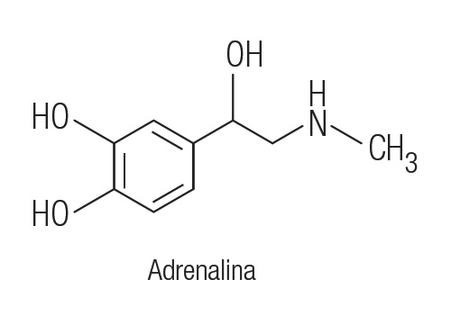
f)
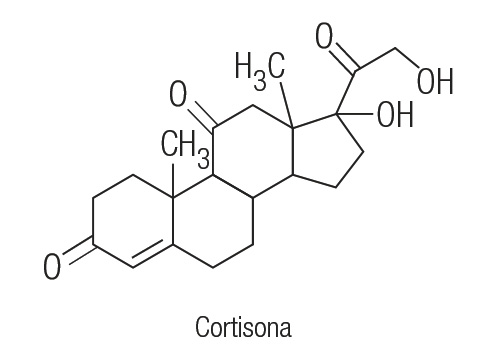
(UFBA) A substância representada pela fórmula estrutural é um quimioterápico sintético, que vem sendo utilizado no tratamento de infecções bacterianas.
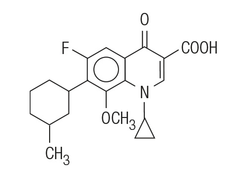
Considerando-se a fórmula estrutural do quimioterápico referido, escreva os nomes de apenas quatro das funções orgânicas representadas, excluindo a função hidrocarboneto.
(UFMA) Em 1898, nos laboratórios da Bayer, na Alemanha, foi sintetizada tendo como precursor a morfina, uma substância três vezes mais potente, a diacetilmorfina. Devido a essa potência, considerada "heroica", a Bayer decidiu
denominar a nova substância com o nome de heroína. Ela é extremamente nociva ao corpo, gerando rapidamente uma dependência química e psíquica. O usuário entra rapidamente em depressão profunda com várias alterações físicas tais como
surdez, cegueira, delírios, inflamação das válvulas cardíacas, coma e até a morte. Considerando a estrutura dessa substância, indique os grupos funcionais presentes nessa molécula.
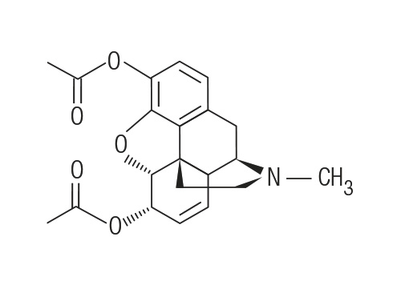
Pelas fórmulas tridimensionais da heroína, da cocaína e do THC (tetra-hidrocanabinol) – principal componente ativo da maconha –, identifique as funções orgânicas presentes em cada uma.
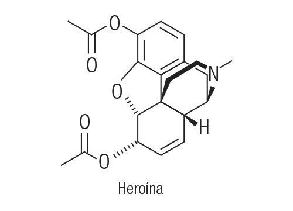
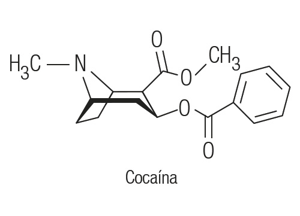
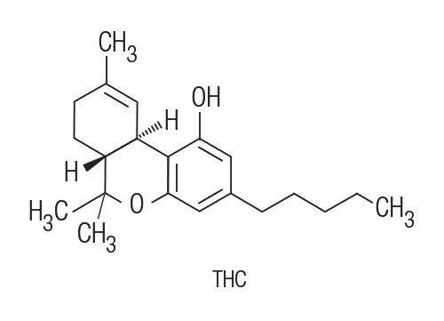
Química em foco
Quais são as drogas que causam crises de abstinência mais graves?
A heroína e outros derivados do ópio, como a morfina, costumam provocar os maiores estragos quando um dependente experimenta a chamada síndrome de abstinência – um conjunto de sintomas que aparece quando a pessoa interrompe ou
diminui o uso da droga. “Isso acontece porque o organismo já estava acostumado a receber a droga e reage à retirada abrupta”, diz o psiquiatra Cláudio Jerônimo da Silva, da Universidade Federal de São Paulo (Unifesp). No caso da
heroína, tudo indica que o mal-estar da abstinência é mais grave por causa da composição da droga, que age como sedativo no organismo. Além disso, a substância vicia muito rápido e age profundamente no sistema nervoso central,
causando uma séria depressão após o uso. [...] Substâncias como a cocaína e a maconha também causam crises. A diferença é que seus sintomas não incluem reações físicas diretas, mas problemas como ansiedade, nervosismo e
comportamento violento, por exemplo.
Lista sinistra
Tentativas de largar substâncias podem causar dores, depressão e até alucinações
HEROÍNA
A droga vicia em apenas cinco doses e apresenta as crises de abstinência mais intensas, provavelmente por causa de sua composição e de seu efeito no sistema nervoso central. Junto com o mal-estar e a inquietação, a pessoa que para
de usar heroína tem aumento de pressão, dores musculares, insônia e vômitos.
COCAÍNA
A síndrome de abstinência tem três fases: primeiro vem a “fissura”, a vontade de usar a droga. Depois, a pessoa passa por um estado de sonolência. Por último, aparecem os sintomas de depressão, como angústia e irritabilidade. A
pessoa pode se tornar dependente a partir da quarta dose.
CRACK
Também derivada da pasta de coca, a versão fumável e mais barata da cocaína causa sintomas de abstinência bastante parecidos com os da sua versão em pó. A principal diferença entre as duas substâncias é que as pedras de crack
viciam ainda mais rápido, arrastando o dependente para o buraco em apenas duas ou três fumadas.
ÁLCOOL
A dependência vem depois de um consumo constante por alguns anos, mas a síndrome de abstinência tem efeitos brutais. O dependente tem tremores, aumento da pressão, fica agitado e perde a clareza para avaliar as coisas. Nos casos
mais graves, podem aparecer alucinações e delírios.
MACONHA
A síndrome de abstinência é um pouco mais leve que a das outras drogas, mas também pode incluir sintomas graves – os principais são ansiedade, perda da capacidade de concentração, insônia e mau humor. Parte dos médicos acredita que
a maconha vicia depois de dois meses de uso constante.
CIGARRO
Apesar de legalizada, a nicotina, a droga-base do cigarro tem um alto poder viciante: a dependência pode ter início se o usuário fumar dezenas de cigarros em uma semana. Quando tenta parar, a pessoa sente ansiedade, angústia e
inquietação. No trabalho, são comuns as perdas de concentração e de atenção.
MUNDO ESTRANHO. Quais são as drogas que causam crises de abstinência mais graves? Disponível em: <http://mundoestranho.abril.com.br/materia/quais-sao-as-drogas-que-causam-crises-de-abstinencia-mais-graves>. Acesso em:
4 ago. 2015.